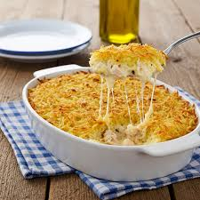
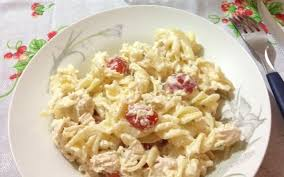
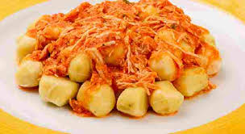

Voltar para a página principal
Jantar
Segue recomendações para seu Jantar
-
Fricassê de Frango

Ingredientes
- 1 peito de frango cozido e desfiado
- 1 lata de milho
- 1 copo de requeijão
- 1 caixinha de creme de leite
- batata palha
- muçarela
Modo de preparo
- Bata no liquidificador o milho (com a água), o requeijão
e o creme de leite
- Refogue o frango desfiado com temperos a gosto
- junte o creme do liquidificador e deixe engrossar
- Coloque em uma travessa
- cubra com muçarela
- leve ao forno para gratinar
- Finalize com batata palha
-
Penne ao Molho Alfredo com Bacon

Ingredientes
- 250g de macarrão penne
- 100g de bacon picado
- 1 caixinha de creme de leite
- 1/2 xícara de queijo parmesão ralado
- Sal
- Pimenta
Modo de preparo
- Cozinhe o macarrão
- Em outra panela, frite o bacon até ficar crocante
- Jogue fora o excesso de gordura
- adicione o creme de leite e o parmesão
- exa até o queijo derreter e o molho engrossar levemente
- Misture o macarrão cozido e sirva com mais queijo
por cima
-
Nhoque de Batata Gratinado ao Molho Rosé

Ingredientes
- 500g de nhoque (pode ser o comprado pronto de boa
qualidade)
- 1 lata de molho de tomate pronto
- 1/2 caixinha de creme de leite
- 150g de queijo muçarela ralado
- Manjericão fresco e sal a gosto
Modo de preparo
- Cozinhe o nhoque em água fervente com sal até que eles
subam à superfície. Escorra
- Em uma panela, misture o molho de tomate e o creme de
leite até ficar um molho rosado homogêneo. Acerte o sal
- Em um refratário, coloque o nhoque e cubra com o molho
- Espalhe a muçarela por cima e leve ao forno alto (220°C)
por cerca de 10 minutos ou até o queijo dourar
- Finalize com folhas de manjericão por cima antes de servir